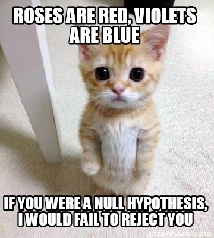

Lab 13: Hypothesis Tests and Confidence Intervals for Proportions
Computer Lab 13
Introduction
In this lab you will learn how to test hypothesis for proportions in R.
Tests for Proportions
Like the t test there are one and two sample versions of the Z tests for proportions. In both cases the proportion is only calculated for dichotomous outcomes. The one proportion Z-test is used to compare the proportion in a sample to a theoretical one. The two-proportion Z test is used to compare two observed proportions. The R function to conduct Z tests for proportions is prop.test(). The same function is used for both the one and two proportion tests. The function reports the chi-squared (\(X^2\)) test statistic. The statistic is related to the z statistic and by taking the square root of the \(X^2\) value (\(\sqrt{X^2}=z\)) you can get the z value. Even though we do not discuss the \(X^2\) test statistic in class we will use it in this lab.
Test for One Proportion
Study Description
A simple random sample of 100 women who delivered a low birth weight baby at two teaching hospitals in Boston, Massachusetts was collected. We are going to use the data to estimate the proportion of women who experience pre-eclampsia (formerly called toxemia). Untreated pre-eclampsia can lead to serious, complications for both mother and baby.
Exercise 1: Data and Assumption Check
Like all the other tests we have learned about this semester we need to have a simple random sample (or can be treated as a simple random sample). The conditions of the binomial distribution must be satisfied (two outcomes, probability of success is the same trial to trial, trials are independent). Remember the z test is for normal distributions, but as long as \(np\ge10\) and \(n(1-p)\ge10\) we can use the normal approximation of the binomial.
For our data we have a simple random sample. There are only two outcomes for the outcome of pre-eclampsia, the probability is the same for each trial, and the trials are independent (the results for one women does not effect the results of another women). So we meet the first two requirements. Now we need to make sure we have sufficient sample size to approximate the binomial distribution with the normal distribution.
Data Dictionary
sbp: The mothers systolic blood pressure (mm of Hg)
sex: (0,1) 0 baby’s sex is female, 1 baby’s sex is male
pre: (0,1) 1 mother received a diagnosis of pre-eclampsia, 0 means the mother did not receive a diagnosis pre-eclampsia.
gestage: Total gestation time (weeks)
apgar5: The APGAR score is a test given to newborns soon after birth. values range from (0 to 10) with 10 being the best.
Instructions Review the data and check and see if we meet the \(np\ge10\) and \(n(1-p)\ge10\) to use the normal approximation. Answer the quiz questions.
Quiz: Questions 1-2
Question 1
What is prevalence of pre-eclampsia among the women?
Question 2
What does \(np\) and \(n(1-p)\) equal for pre-eclampsia?
Exercise 2: One proportion test
Now that we now we have meet the requirements we can start to test some hypothesis. In r we will you the prop.test() function. The general form of the function is prop.test(x = “# success”, n = “# trials”, p = “null value”, correct = FALSE). The first value to specify is the number of successes (remember you define this). The next value is the total number of trials. The value for the p is the null probability. Finally by setting correct to false prevents R from applying a correction used for small samples. Click the link if you want more info on the Yates correction.
Test the null hypothesis that the proportion of mothers who experience pre-eclampsia during pregnancy is equal to 0.25 against the two-sided alternative hypothesis:
\[\alpha=0.05\]
\[H_{0}: p=0.25\] \[H_{A}: p\neq0.25 \]
Instructions Complete the code below to test the hypothesis and click the run code button. Use the output to answer the quiz questions. If you are having a hard time check out the examples from STHDA One-Proportion Z-Test in R.
Quiz: Questions 3-4
Question 3
What is the test statistic, degrees of freedom, and p-value?
Question 4
What may you conclude from the results of the above hypothesis test?
Two Proportions test
Study Description
Smith and coworkers (American Journal of Public Health Supplement 81, 35-40) performed a census of all women who entered the New York State correctional system between September and December of 1988. Each woman was cross-classified by HIV seropositivity (hiv = 1 if HIV seropositive, hiv = 0 if HIV seronegative) and their histories of intravenous drug use (ivdu = 1 if history of intravenous drug use, ivdu = 0 if no history of intravenous drug use).
Exercise 3: Data and Assumption Check
Like all the other tests we have learned about this semester we need to have a simple random sample (or can be treated as a simple random sample). The conditions of the binomial distribution must be satisfied (two outcomes, probability of success is the same trial to trial, trials are independent). Remember the z test is for normal distributions, but as long as \(np\ge10\) and \(n(1-p)\ge10\) we can use the normal approximation of the binomial.
For our data we have a census so we have data for all the incoming female prisoners so we can treat the sample as a simple random sample. There are two outcomes for each question, the probability is the same, and the trials are independent (the results for one women does not effect the results of another women). So we meet the first two requirements. Now we need to make sure we have sufficient sample size to approximate the binomial distribution with the normal distribution.
Data Dictionary
hiv = (0,1) 0 is HIV seronegative, and 1 is HIV seropositive
ivdu = (0,1) 0 no history of intravenous drug use, 1 history of intravenous drug use
Instructions Review the data and check and see if we meet the \(np\ge10\) and \(n(1-p)\ge10\) to use the normal approximation. Answer the quiz questions.
Quiz Questions: 5-9
Question 5
What is prevalence of HIV among the women?
Question 6
What is the prevalence of intravenous drug use in the women?
Question 7
What is the prevalence of HIV among women with a history of intravenous drug use?
Question 8
What is the prevalence of HIV among women without a history of intravenous drug use?
Question 9
Are any of the values in the 2x2 table less than 10?
Exercise 4: Intravenous Drug Use and HIV Seropositivity
Now that we know that our data meets the requirements we can start testing different hypothesis about the proportions. The general form of the function is prop.test(x = c(x1, x2), n = c(n1, n2), correct = FALSE). The first value to specify is the number of successes in each group (the first row in the 2x2 table above). The next value is the total number of trials in each group (the sum of each column in the 2x2 table above). Finally by setting correct to FALSE R will not apply the Yates correction for small samples.
What is the impact of intravenous drug use on the prevalence of HIV?
Test the null hypothesis that the proportion of HIV+ is the same for women with a history of intravenous drug use as those without a history of intravenous drug use. Use a two-sided alternative hypothesis:
\[\alpha=0.05\]
\[H_{0}: p_{~HIV+,~IVDU} = p_{~HIV+,~No~IVDU}\] \[H_{A}: p_{~HIV+,~IVDU}\neq p_{~HIV+,~No~IVDU} \]
Instructions Complete the code below to test the hypothesis and click the run code button. Use the output to answer the quiz questions. If you are having a hard time check out the examples from STHDA Two-Proportion Z-Test in R.
Quiz Questions:10-11
Question 10
What is the test statistic, degrees of freedom, and p-value?
Question 11
What may you conclude from the results of the hypothesis test?
Summary
In this lab, you completed 4 exercises and answered 11 quiz questions.
The lab covered 2 topics:
- One Proportion tests in R
- Two Proportion tests in R
You finished the last lab! Don’t be too sad, you can still learn more by taking BIOS3000 next semester. Don’t forget to record your answers and take the eLC quiz to get credit
